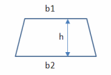
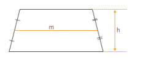
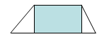

Recall that the bases are the two parallel sides of the trapezoid. The altitude (or height) of a trapezoid is the perpendicular distance between the two bases.In the applet above, click on "freeze dimensions". As you drag any vertex, you will see that the trapezoid redraws itself keeping the height and bases constant. Notice how the area does not change in the displayed formula. The area depends only on the height and base lengths, so as you can see, there are many trapezoids with a given set of dimensions which all have the same area.
| ENTER ANY THREE VALUES | ||
| Height: | clear | |
| Base 1 | clear | |
| Base 2 | clear | |
| Area | clear | |
Use the calculator above to calculate height, base lengths and area of a trapezoid.
Enter any three values and the missing one will be calculated. For example: enter the height and two base lengths, and press 'Calculate'. The area will be calculated.
Similarly, if you enter the area and two base lengths, the height needed to get that area will be calculated.
How to find the height (altitude) of a trapezoid give the two bases and the area. The main area formula above has four variables (area, two bases and height). If we know any three we can always find the fourth. So for example, if we know the area and two bases we can find the height, simply by re-arranging the main formula: Where a is the area and b1, b2 are the two bases.
How to find a base of a trapezoid give the one of the bases, the height, and the area. The main area formula above has four variables (area, two bases and height). If we know any three we can always find the fourth. So for example, if we know the area and one base and the height, we can find the missing base, simply by re-arranging the main formula: Where a is the area and b is the known base, and h is the height (altitude).

Recall that the median (m) of a trapezoid is the line segment linking the midpoints of the non-parallel sides. Recall also that the median's length is the average of the two parallel sides. See Median of a TrapezoidWhere m is the median and h is the height (altitude).

For more on this general technique, see Area of Irregular Polygons.